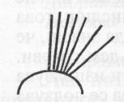

Беседа 3716 от 3877 · Беинса Дуно
Малките правила
Добрата молитва
Изгрява Слънцето
(Направихме упражнението с ръцете и дишането.)
Ако питате кога ще дойде пролетта, може да ви предскажа: на 22 март. Кога ще дойде есента? На 22 септември. Щом като знаете кога ще дойде пролетта, ще намерите за зимата, три месеца разстояние има, ще намерите и кога ще дойде лятото. Казвате: “Пролет”. Пролет и лято се различават, есен и зима се различават. Пролетта е много активна, всичко има преизобилно, големи пертурбации стават в пролетта. Лятото утихва, тиха и спокойна работа се върши. Когато ти ставаш тих, трябва да си в лятото, да зреят нещата. Казва: “Аз бях много активен”. Сега какво става? Лято е сега. Като дойде есента – има една възраст, която е като есента – като дойдат хората в есента, пак стават активни. Когато хората се раждат, майката е много активна, защото е пролет, но и когато наближи да умират, пак стават активни.
Ние се плашим, както един българин се плашил, че от сина му няма нищо да стане. Той казва на сина си: “Синко, от тебе човек няма да стане”. Синът искал да покаже, че от него може да стане човек. Напуща дома, ходи в странство, самостоятелно работи, свършил и дошъл в България. Назначили го за управител на една област. Става голям човек и праща двама души стражари, да задигнат баща му от къщи. Уплашил се човекът. Като го завели при него, казва: “Ти знаеш какво ми казваше едно време, че човек няма да стана. Аз съм твоят син, на когото казваше, че няма човек да стане”. Той го поглежда, познава сина си и му казва: “Синко, така прави ли се!? Ти ме уплаши, ти мязаш на мечка. Прати ми един файтон с почит да ме повикат, не тъй да ме докарат стражари! Още не си поумнял. Има доста тщеславие и голяма гордост има. Може би аз ти ги предадох, но уплаши ме”. Синът помислил малко, видял, че баща му е прав. Казва: “Да ме извиниш, татко, втори път като те викам, ще те повикам по начина, по който ти казваш”.
Сега често и ние постъпваме като този българин. Не че сега има някакво лошо желание, но и бащата не е прав. Не е прав, понеже той няма право да каже: “Синко, от тебе нищо няма да стане”. Синът ще стане това, което той е дал на сина си. Той няма право да каже, че пролетта няма да дойде, че лятото няма да дойде. Дали си разположен или не си разположен, ще дойде пролетта. Какво ти мислиш, това е друг въпрос. Божествените процеси, трябва да знаеш, че те идват независимо от нас. Ние трябва да бъдем готови. Умният ще ги използува умно, глупавият ще ги използува глупаво. Под думата глупаво разбираме няма да се ползува от тях. Най-първо нас ни трябва младост. Под думата младост, на физическото поле, разрбираме най-добрата храна. Това е младост. Най-добрата храна и най-добрите условия, при които човек може да се прояви. При възрастния човек пак трябва да имаме най-добрите условия, при които да можем да свършим една работа. Пишеш ти една книга, трябва да се отпечата хубаво, чисто. Пишеш писмо, да го напишеш чисто, без да го оцапаш, да го напишеш чисто, хубаво. Или дойде есента, трябва да имате онова, което сте придобили. Когато даваш хубавите мисли на хората, от себе си ще дадеш най-хубавото. Който хубаво дава, хубаво приема. Който лошо дава, лошо приема. Сега ние сме призвани в живота да работим разумно. Някой път се занимаваме с работи, които не зависят от нас. Как ще се оправи света, не е наша работа. Светът ще се оправи. Как ще се оправи? Като дойде пролетта. Колко пъти стават наводнения, дъждове валят, колко неща се струпват. И пролетно време умират, и зимно време умират хората. Но има една разлика, че зимно време като отиват да погребват умрелите, изстиват ръцете им, краката им, треперят, казват: “Сега ли намери да умре, в този студ”. Като умре пролетно време, казват: “В много хубаво време умря”. Когато направим една погрешка, да не я направим зимно време, да я направим пролетно време. Като умираме и на себе си правим пакост, и на другите правим пакост, на онези, които ни погребват. Казват: “Ще умрем”. Ние създаваме пакост на хората да плачат. Да се раждаш, разбирам. Като се родиш, от тебе очакват да се роди нещо, да излезе нещо. Ако си роден добър цигулар, като излезеш по света да свириш, хората като са чакали да дадеш нещо, ще се радват. Ако си поет роден, напишеш нещо, четат хората, целият свят няма да чете, но онези, които четат, ще се ползуват.

Вие по някой път мислите, че можете да станете добър. Вземете щедростта. Правил съм наблюдение. Гледам някой като бръкне в джеба си – някой богат човек носи доста дребни пари – бръкне в джеба, извади 5 лева, тури ги в джеба. Бръкне пак, извади 2 лева, върне ги пак в джеба. Извади 1 лев, пак в джоба. Извади половин лев и него тури назад. Намери едно десетаче и от него като не намери по-малко, даде. Този човек какъвто е на физическия свят, такъв е и в духовния. Той няма да ти даде една голяма идея, а една малка идея. Казвате: “Бъди щедър!” Този човек трябва да го туриш в сиромашия, да има нужда, че тогава хората да го учат, да му дават 10 стотинки. Какво ще купи с десет стотинки? Днес да си изкараш прехраната, при сегашната скъпотия, ти трябват 50 лева. Да изкараш 50 лева с просия, на колко места трябва да идеш, колко хуканици ще има? Погледне те някой с презрение, вземе те един работник за работа. Дойде господарят, гледа да откъсне 10 или 20 стотинки. В него се ражда омраза, откъсваш от онзи човек. Той казва: “Подяде ме”. Защо трябва да го подядеш? В Божествения свят никога не подядат. Десет стотинки дай повече, дай 20, 30 стотинки, няма да те заболи глава. Сега това са общи правила.
Казваме: “Трябва да бъдем добри”. Ние трябва да имаме една идея. Някой от нас е като корен на Божественото дърво. Някой е голям клон, някой е по-малък – малко клонче представя. Някой още по-малък, листа е. Милиони листа има на едно дърво. Някои от хората са цветове, някои от тях ще станат плодове. Единственото нещо, което ние очакваме от едно дърво, е плодът. Плодът иде най-после. Казвате: “Какво бива един лист?” Ако туй дърво не изкара своите листа, ако те не са зелени и свежи както трябва, ако туй дърво не образува корените на материалния живот, които са в земята, може ли да се развива добре това дърво? Вие казвате: “Той е материалист”. Или казвате, че някой е безбожник. Голяма работа свършват безбожниците. Всичките корени на дърветата се все безбожници. Туй е физическо разбиране. Що е безбожник? Тия корени не виждат светлината, безбожникът е на тъмно, не вижда къде е тази светлина. Слънцето не го вижда. Прави са хората. Казват: “Има голямо Слънце”. Казват: “Не може да вярваме”. Те са материалисти – туй, което виждат, вярват. Казват: “Не виждаме Слънцето”. Чувствуваме някаква топлина, някаква приятност, но и без тия корени не може. Онези клонища, които са отвън, те са в по-добри условия. Но те са в зависимост от корените. Между корените и клонищата има една обич. На всеки корен съответствува един клон. Благата, които клоните приемат от Слънцето, изпращат ги в корените. Ако клонищата не изпращат тия сокове, корените ще изсъхнат. Щом изсъхнат корените, изсъхват и клонищата. Щом изсъхнат клонищата, изсъхват и корените. Има зависимост. Казвате: “Как ще се оправи светът?” Този бил материалист. Оставете, не оправяйте света! Материалистът е намясто. И идеалистът е намясто. Всичките са намясто. Тия книги, които хората са написали, това е тяхно мнение. Писал ли е Господ някаква книга, да кажем за някого, че този е безбожник? Има ли някаква книга, дето Господ да е казал, че някой е безбожник? Библията е писана. Но в Библията е писано как хората разбират Божия закон. Като пишеш, да кажеш: “Това са мои възгледи, аз мисля така”. Сегашните хора винаги трябва да мислят. Ако идете някъде по света и ако срещнете религиозни хора, ако не разбирате, както те разбират, казват: “Не е правоверен”. Добре е да е някой добър химик в света, но не трябват само химици – някой добър физик, някой добър астроном, някой добър поет, цигулар. Каквото положение и да вземеш в света, ти си една важна единица. Колкото и да си нищожен, от Божествено гледище, ти си един лист. Като дойде един учен човек, от един лист може да чете. На този лист от дървото е написана цялата история на всичко онова, което става. Като гледаме дървото, може да прочетем преди 10, 15, 20 години какво е било. Хроникирано е на клонищата имало ли е дъжд, имало ли е суша, имало ли е плодородие. Отбелязано е кога е била пролетта хубава, кога пролетта е била лоша. Отбелязано е лятото, отбелязана е есента, зимата, всичко туй е отбелязано. Как? Отбелязано е.
Най-първо ще се освободите от вашите стари възгледи. Ти станеш сутрин, неразположен си. Защо си неразположен? Вечерта си ял някоя свинска пържола или сланина си ял, както обичат българите. Или си ял сготвено нещо, с лошо масло. Станеш и казваш: “Не зная какво ми е”. Яденето е причина или може би десетина души сте били в една стая, а въздухът е бил развален, не сте отворили прозореца, да не би да се простудите. Станеш, тежко ти е. Причината е, че прозорецът е бил затворен, трябваше да бъде отворен прозорецът малко. Станеш сутринта, бил си господар. Този слуга си подял, онзи слуга си подял. Тия слуги са ти пратили лоши мисли, цялата нощ се въртиш и не можеш да спиш. Станеш сутринта, неразположен си, нещо те мъчи. Иди да намериш тия хора, които си подял, иди да поправиш грешката си. Мислите ли, че Господ не е направил света? Някой път някой човек ти напакости и ти казваш: “Господ е причината. Той го прати”. Разболял се някой – Господ е причината; оздравял някой – Господ е причината. Религиозните хора казват така, а светските хора казват, че или светът, или обществото е причината и че хората си препятстват. Но и ние до голяма степен си препятстваме.
Минавам един ден и гледам едно куче ме гледа и аз го гледам. Аз чета в него, то мисли да ме залае или не. Мисли как да ме залае. Опашката му опъната, неподвита, сериозно ме гледа имам ли позволение. Аз го посрещам, както може да се посрещне едно куче. Бръквам в джоба си, хвърлям му, то ме гледа и ме пита: “За мене ли е?” Правя му един знак с ръката, че е за него. То подвие опашка и започне да я върти. Издаде един звук, залае ме, но ми казва: “Добре дошъл. Много ми е приятно, че имам такъв гост за първи път”. Казва: “Махни се от пътя”. Аз го заобикалям, не отивам да го плаша. Давам почитание на него. Мисля го като полковник, както един войник го заобикалям. Казвате: “Куче е, да се махне от пътя”. Аз виждам, туй куче, турено на длъжност от господаря си. “Господине, аз имам длъжност. Господарят ми заповяда, без позволение не може да се минава оттук”. Аз трябва да зачитам тревата. Казвате: “То е куче”. Така може да мислят обикнивените хора. Виждам едно дърво посадено, то е поставено на място, не е безразлично де е израснало. Виждам една река, която тече, не е безразлично де тече. Всяко нещо, което е Божествено в света, трябва да му дадем Божествена почит. Ти, като станеш сутрин, благодари на Бога за това, което ти е дал. Поблагодари най-първо за косата, която имаш. Знаете ли, че като оголяват главите на хората, те не са така радостни и весели. Това са антени. Всеки косъм е антена. Докато има косми на главата ти, ти си радостен. Щом няма косми на главата, ти ставаш недоволен. Онези от вас, които имате голи глави, идете да сеете семена за косите и ги саждайте на главата си. Вие искате всичките хора да живеят добре. Те и сега са добре. Когато човек е болен, всичко наоколо му се вижда лошо. Изобщо цялата Природа е красива, злото в света е частично. Вземайте злото като творчески принцип. Ако вие срещнете нещо лошо, то е за поправка. Желязото не го мажат с четка, но чук играе върху него. Когато някой художник рисува, с най-хубавата четка работи, чукът не играе. Вие трябва да знаете как да употребявате чуковете, трябва да знаете как да употребявате четките. Във вашата мисъл ще имате четки, ще имате чукове, ще имате брадви, ще имате мотики и всичко туй трябва да е турено на място. Четките ви да са чисти. Мотиките ви, брадвите ви да не са ръждясали. Тук аз съдя за Братството. Нашите мотики тук са ръждясали, ръчките на брадвите са изпочупени. Греблата, дето имаме, са развалени. Най-първо, като дойдохме тук, един брат донесе много инструменти. В един сандък донесе нещо за 12 000 лева инструменти. След една година, две – изчезнаха. Този взел – братско, онзи взел – братско, няма ги. Тази ръчка се счупила, онази мотика развалена, всички безразборно вземат, казват: “Братско е”. И братското еднакво чисто трябва да се държи. Аз ако съм работник, след като работя с една мотика, ще взема да я изчистя хубаво и чиста да остане. Тук гледам братя и сестри работят някъде и оставят на земята бела или мотиката, и хайде вкъщи. Не оставйте бела неочистен! Хубаво изчистете инструментите! Не само тук, но и вкъщи правете същото. Някой носи перо, пише и след като пише, не го изчисти. Като пишеш, изчисти перото хубаво, не бързай. После някои като работят с перото, тръскат го на земята, тези новите пера. Тогава и като кажем някоя идея, пръскаме, перото не върви. Някой път не си разгледал, тук останало мастило, там останало мастило, не работи перото.
От моето гледище, туй, което аз съм научил, за да предизвикаш хубавото в хората, не търсете техните погрешки. Аз съм правил опит и казвам: възможно е, не е лесна работа. Във всичките животни, вземете змията, която е много жестока, главата ў е плоска, разрушителните центрове до ушите са силно развити. В змията няма никакво милосърдие. Когато хване една жаба, гълта я. И като гълта жабата, ў е приятно. Жабата усеща страдание, кречи тази жаба. Един човек може да вземе една жаба, да я удря с чук – нищо няма да каже, но щом я хване една змия, тя кречи. Минавам един ден през Борисовата градина, една змия ме видя, дигна си главата, спря се, извади си езика раздвоен, поздравлява ме. Спрях се и аз. Казвам на змията: “Добър ден, какво правите?” Тя казва: “Пека се на Слънце”. Казвам ў: “Не стой тука, хората са невнимателни, на този път ще ти пречупят главата, иди на друго място. Аз ти казвам, не стой тук, ще платиш с живота си! Има закон издаден – като срещнат една змия, да ў пречупят главата. Вашите прадеди са направили една голяма погрешка в Рая и сега хората имат голям зъб на змиите”. – “Що сме виновати ние, че нашите прадеди са направили погрешка?” Казвам: “Държат ви отговорни”.
Въпросът седи в туй: търси в един човек хубавото, което Бог е вложил. Намери нещо хубаво в неговия ум! Едно нещо, не десет неща. Намери нещо хубаво в неговото сърдце. Намери нещо хубаво в неговата душа, в неговото тяло. Намери една хубава черта, това е полезно за тебе. Ако ти не се научиш да гледаш хубавото, не може да се ползуваш, защото хората са обект на визпитание. Ако ти в хората, като се оглеждаш, не виждаш хубавото в тях, правиш пакост на себе си. Казвам: най-първото нещо, трябва да се спираме върху неща, които са добри в нас и в другите. Кое е най-хубавото в човека? Какво ти коства да кажеш на човека една хубава дума? Какво ти коства като срещнеш един човек, да го поздравиш? Сега питаш: “Трябва ли да поздравлявам или не?” Поздрави този човек, като че срещаш баща си, като че срещаш брата си, като че срещаш сестра си. Каквато и длъжност да завзема, тази длъжност, колкото и да е нищожна, е ценна в Божествения свят. Вие сте чиновник в пощата, ще дойдат не само богати хора да купят марки, писма, но и бедни и всички трябва да приемеш добре, от Божествено гледище. Дойде един цвят, който дава ухание, към него имаш разположение. Ако някой цвят няма това ухание, не може да бъдеш разположен. Най-първо ти от своето ухание го наръси. Нали хората имат такива пръскалки. Някой мирише на теменужка, на розово масло. Хубаво е всичко това. Някой път някой човек се понамазва с червено, хубаво нещо. Гледам ноктите си мажат с червено. Красиви искат да бъдат. Нека си намажат къщата отвън. Сега хората вървят по навика на старите българи. Една млада мома българка, която иска да се покаже, като замаже къщата, ще тегли една червена линия, ще я намаже хубаво навсякъде и казва: “Много хубаво е замазана къщата”. Пред всяка къща тия моми посаждаха цветя, малка градинка с цветя имаха и знатни ставаха. Защо човек да няма такава градина? Той чака да се образува закон и тогава да има градина. Казвам: не си струва. Когато ще изкараш въздуха навън, прати една хубава дума. Минаваш някъде, някой човек съвсем закъсал, спри се при него. Ако е болен, кажи му: “Ще оздравееш!” Дали ще оздравее, или не, е въпрос, но ти му кажи: “Ще оздравееш!” Скъсан е някой студент, кажи му: “Втори път ще издържиш изпита”. Осиромашал някой, кажи му, че ще се оправят работите. Някой има ревматизъм, бутни крака му и кажи: “Ще оздравее кракът ти”. Ти казваш: “Ама дали ще оздравее?” Ти го бутни и кажи, че ще оздравее, пък остави това дали ще оздравее, или не. Кажи, че пролетта ще дойде и тя ще дойде. Кажи – лятото ще дойде и то ще дойде. Кажи, че есента ще дойде и тя ще дойде. Кажи, че зимата ще дойде и тя ще дойде. Каквото кажеш, ще стане. Кажи, че Слънцето ще изгрее и то ще изгрее. Всеки един от вас каквото каже, ще стане. Като кажете, че ще изгрее Слънцето, ще изгрее, нищо повече. Кой от вас не може да стане пророк? Има неща, които всеки като ги каже, ще станат. Петелът казва: “Ще изгрее Слънцето” и то изгрява. Кучето залая, че ще изгрее Слънцето и изгрява. Комарът каквото каже, кучето каквото каже, петелът каквото каже и всеки каквото каже, става. Те са Божествените неща, които може да ги кажем. За човешките работи друг е въпросът. Човешките работи, като ги правим по някой път, не знаем дали ще станат, или не. Има един анекдот. Един българин бил много своенравен и казал на жена си: “Утре, като стана, ще ида на лозето да го прекопая”. Тя казва: “Мъжо, кажи, ако е казал Господ”. – “Казал, не казал, ще ида да прекопая лозето”. Тя казва: “Кажи, ако е казал Господ!” – “Мене не ме интересува дали е казал Господ, или не. Аз – казва – ще ида да прекопая лозето”. Станал сутринта, в турско време било, хващат го турците, подкарват го и той целия ден с колата ходил ангария да работи. Връща се вечерта посред нощ, чука на вратата. Казва: “Жена, отвори, ако е казал Господ”. Сега туй не е станало тъй. Анекдот е. То е за някакъв морал.
Аз разбирам следното: Никога не започвайте една работа, ако нямаш в ума си една светла мисъл; не започвай една работа, ако нямаш едно светло чувство; не започвай една работа, когато волята ти не е хармонична! Почакай да дойде светлина в ума ти. Почакай да дойде добро разположение в сърдцето ти. Почакай и в душата ти да дойде разположение. Туй значи “Ако е казал Господ”. Когато Слънцето изгрее, то праща своята светлина, праща и своята топлина. Когато вятърът духа, той донася своите благословения, облаците донасят дъжд. Вие седите и се безпокоите за нищо и никакво. Стани сутрин, направи Добро на ръцете си, не си мил ръцете си, гледаш окаляни, вземи сапун, измий ръцете си, поискай извинение. Кажи: “Ще ме извините”. Ти си осакатил ръцете си, загрубели. “Трябва да има пришки на ръцете – казвате – да се покаже, че сме работили”. Не е човешко това. Аз като се ръкувам с хората, виждам, че някой скоро ще свърши. Още като му пипна ръката, познавам. Казвам: “На лош път си тръгнал. Ти си се напрегнал, искаш да станеш богат. Ти с този товар на богатството ще умреш”. Не само пари трябват на човека. Най-първо трябва да забогатее сърдцето ти, душата ти, духът ти вътре. Най-първо всяка една клетка, всеки уд, каквото погледнеш – пръстите, косата, всичко да бъде в изправност. Станеш сутрин, вчеши се хубаво! По някой път вие с ръце си оправяте косата. Няма вчесване. Всеки да има едно гребенче да се вчеше. Онези, които са с голи глави, са свободни. Сега някои от вас се интересуват какво ще бъде в оня свят. Божественият свят, като идете оттука, трябва да направите едно сетиво, за да го схванете. Ако в твоята душа не може да образуваш една мрежица, с която да схващаш Божествената светлина, не може да видиш Божествения свят. Ние тук виждаме, защото схващаме физическите лъчи на светлината. Трябва да имаме духовни очи. Да имаме духовна мрежица, а в ума си, в Божествения свят, да имаме Божествена мрежица. Три мрежи трябват. Всеки свят си има една своя светлина. Ако тия трите мрежи ги нямаме, не може да възприемем съответната светлина. Божественият свят не се осветява с физическата светлина. Физическият свят се осветява с физическата светлина, те са най-грубите вълни; след това идат духовните и Божествените са най-деликатните лъчи, които осветяват света. Сега ще оставим Божествения свят и ангелския свят.
Ако ти не можеш да облагородиш косата си, ако ти не можеш да поправиш формата на ухото си донякъде, ако ти не можеш да поправиш пръстите, тялото си, от това ще съдят заради нас. Тялото е един инструмент, с който сме работили и работим, оставяме го да ръждяса. Ще го чистим. Аз имам едни ножици от 40 години, държа ги тъй чисти както в началото. Употребявал съм ги всеки ден, но ги чистя. Обвил съм ги с един копринен плат, чисти са като нови. Ако бях ги употребявал като обикновеному, отдавна да са заминали за другия свят. Остри са като в самото начало. Ако вий не може да държите вашия ум в изправност, той трябва да забогатява. Казвате: “Едно време бяхме добре, сега започваме да ставаме нервни”. От какво произтича нервността? Има някакъв недоимък. Щом сме гладни, нещо органическо ни липсва. Недоволен си. Щом дам храната, хубава храна на клетките, веднага ставаме разположени. Някой път и умът има нужда от хубава храна. Дай му хубаво четиво. Прочети хубава книга с хубави мисли. Или пък някой път си неразположен. Като видиш някой добър човек, влиянията, които изтичат от него, са хубави. Някой път между хората като ходим, известни трептения има, за да се приближаваме при някои хора, нещо хубаво излиза от тях, едно ухание. Тъй че където и да минаваме, навсякъде да бъдат доволни хората от нас. Христос казва: “Така да просветнат делата във вашия ум, така да просветнат делата на вашето сърдце, така да просветнат делата на вашата душа, че като ги видят хората, да прославят Отца Вашего, Който е на Небесата.” Цитирате този стих, но да стане този стих плът и кръв за нас. Сега често ви наблюдавам. Приведа някой пример, засегна някого, казва: “Това е за мене”. Пиша една буква, например А. Напиши най-хубаво буквата. Идеш някъде, кажи: “Добър ден”. Не бързай да кажеш “Добър ден”, но кажи го хубаво. Не бързай да кажеш “Добър ден”, но в този “Добър ден” трябва да вложиш туй Добро. Като му кажеш “Добър ден” на човека, да каже: “Днес ще върви”. И умът да бъде радостен, и сърдцето да бъде радостно. Добър ден е да имаш Доброто. Като кажеш “Добър ден”, да кажеш “Божието благо иде”. И да се радваш, то е добър ден. Добър ден е само Божият ден. Слънцето ще изгрее и ще донесе Божиите благословения.
Вие всички сте артисти, големи артисти сте, много хубави инструменти ви са дадени. Гледам вашите инструменти, китари, цигулки, пиана – прашасали. Изчистете пианото хубаво от праха. Изчистете цигулката хубаво от праха. На някои гледам цигулките, като свирят, побелял корема на цигулката. Циганите мислят колкото е по-бял коремът на цигулката, толкова по-добър глас издава. То е въпрос. Никакъв прах да няма на корема на цигулката! Щом свириш, изчисти корема на цигулката, не оставяй коремът да побелее. Никога не оставяйте една мрачна мисъл във вашия ум! Като лягате, не оставяйте една мрачна мисъл във вашия ум. Заместете мрачните мисли със светли мисли. Никога не лягайте да спите с едно мрачно чувство във вашето сърдце! Няма да имате никакъв сън. Заместете го със светло чувство! Никога не оставяйте в себе си една лоша постъпка! Заместете я! Те са първите правила, с които трябва да се справим. По някой път ходим на концерт, защото всеки един артист ме интересува като свири. Най-първо гледам как държи цигулката, как държи лъка, накъде е обърнат, на юг ли, на север ли, каква поза има, гледам как свири. Мене ме радва. Виждам впрегнал ума си на работа, някъде сърдцето впрегнал на работа. Не го критикувам как свири. Аз искам да го чуя. Като влиза, аз имам най-хубавото разположение към този артист. Гдето съм ходил досега да слушам, и никой не е свирил лошо, в мое присъствие лошо не може да свири, помагам му. Казвам: “Хубаво ще свириш”. Вие идете на концерт и като излезете, казвате: “Не свири хубаво”. Половината от отговорността е ваша, вие развалихте концерта. Казвам: и тук като дойдем на събранието, от всеки едного от вас зависи събранието да бъде Добро или не. И от мен зависи. Ако дойда и ви нахукам, вие сте такъв, вие сте такъв, утре такъв, какво ще излезе? Не оспорвам, много добре сте направени, малко сте мързеливички. Постоянно отлагате, отлагате. Тия малките погрешки отлагате, да ги поправите. За малки работи правите пристрастие. Казвате: “Днес ще ми дойде на гости голям човек”. И на малките, които идват, казвате: “Днес да не идвате вие малките, защото големи хора ще посрещам”. В Божествения свят големите хора като дойдат, те са много умни. Когато ще дойде един голям човек, той иска да приемаш най-първо всичките малки и него най-после. На Земята най-големите най-първо приемат и после другите, а в Божествения свят малките най-първо, а големите най-после. Ти ще посееш едно дърво в земята. Най-първо ще му израстнат корените, клонищата и след туй ще дойдат листата. Като се оформи, ще дойде цветът и най-после – най-хубавото, което очакваме, то са плодовете, които идват последни. Ако най-първо сиромасите не бяха дошли, ако корените, които са най-бедни не бяха дошли, ако и клоните не бяха дошли, где ще се явят плодовете? Вий считате някого, че е голям човек. Той не е отделен от дървото. За да бъде голям човек, преди него трябва да са дошли всичките ония малките, нищожните и тогава той ще дойде. Те ще му помогнат. Енергията от малките хора влиза в големите. От хиляди малки реки става голяма река. И в нашия организъм ако деятелността на всичките клетки в мозъка, в цялото тяло не се съединят в едно, нищо не може да направим.
Трябва да има една хармония. Та казвам: помнете правилото – като станете сутрин, да обичате всички, заради Единия, Който живее в тях! Да обичаш всичките хора, заради Единия, Който живее в тях! Аз обичам всичките хора, в които живее Единия. Не може да не обичаш един човек, в когото Бог живее. Въздуха не го обичаме, ти не съзнаваш. Щом съзнаваш, че Бог е в него, не може да не го обичаш. Умният човек, като влезе в една къща, отваря прозорците и светлината влиза. Онзи, който не е умен, оставя прозорците затворени и светлината не може да проникне, тъмно е в къщата. Първото нещо е: да отворите вксичките ваши прозорци, седем милиона прозорци има човек в тялото си. Всичките тези седем милиона прозорци трябва да бъдат отворени, да влезе Божествената светлина вътре. Туй е задачата! Да приемем светлината отсвякъде и в ума ни, и в сърдцето ни, и в душата ни. Сега практическото на Земята, което трябва при сегашния живот, да приложим. Да кажем вие сте неразположен. Спрете се, търсете някой човек на Земята, някой здрав човек, който има въображение, намерете един човек със закръглено лице, валчесто лице, с кафяви очи, строен, свободен. Вие като вървите по пътя, наблюдавайте как са направени дърветата. Много пъти бихте почерпали енергия от дърветата. Като се спрете, вие по някой път сте ангажирани с вашите мисли, които не са естествени. Има човек несрети в живота – или обущата му не са направени както трябва, или чорапите не са както трябва, или дрехите не са както трябва. От неговата мисъл зависи всичко туй. Сега не е лесно да се научи човек да пише хубаво. Всичко туй ще се предаде на характера. Ако пишеш хубаво, можеш да се възпиташ. Някой път си развълнуван. Пиши буквата А, а, после пиши буквата Б, б. Най-първо пишете гласните. Искаш някой път добре да носиш товара си. Пиши А, да си доволен, пиши малко и голямо А. Като се научиш да пишеш а, можеш да носиш товара си, а означава натоварена гласна. Искаш някой път да се движиш по правата посока, пиши И, и. Като го пишеш, да си доволен. И тогава работите ти в Добро направление ще бъдат. Искаш някой път работите ти да се разрешат, пиши Е, е, веднъж, два пъти, три пъти и като се научиш да пишеш Е-то добре, работите ти ще тръгнат. Ако дойдем в музиката, да ви дам три правила: “до”, “ми”, “сол”, “до”. Ако искаш туй, което правиш, да го правиш добре, трябва да вземеш “до” много хубаво. Като пееш “до”, ти сам да се радваш. Този глас ти да го слушаш. Не да питаш другите как си го пял. Ти като вземеш тихо тона, да го слушаш сам. От едната страна като пееш и от другата страна като пееш, ти сам да си публика. Като пееш този тон хубаво, ще ти тръгне работата. Вие сега казвате: “С такива работи не се занимавам”. Ако ние не се занимаваме с малките работи, от нас нищо няма да остане. Като седнеш да ядеш, не е ли малка работа! Но трябва музикално да ядеш. Някой като яде, едва си движи устата. Енергично, хубаво ще ядеш. Най-първо не бързай в яденето. Репертоарът да е нареден. Погледай го, изправи се хубаво и никой да няма зад гърба ти. Когато някой пее на сцената, не трябва да има някой зад гърба му. Онзи ден гледам, той свири и зад гърба му като конвой се наредили, той се изпоти. Публика имаше и тия трептения бяха много влажни, дисхармонични, мъчи се човекът – не излиза. На цялата сцена трябва да има двама-трима души, никой да няма зад гърба на артиста. От публиката зад гърба се освободете, всички да бъдат пред вас. Вие ще оставите вашите лоши мисли и желания около вас. Ще ви смущават и няма да може да направите нещо. Христос е турил тази идея, като е казал: “Отречете се от баща си и от майка си”. Отречете се от баща си, който ви смущава, от брата си се отречете. На Божествената сцена ти ще се отречеш сам. Ние всички страдаме, качваме се на човешката естрада много. На Божествената сцена никой да няма, там да дойдат един-двама, които те обичат.
Помнете: в живота ние без Любов нищо не можем да постигнем. Майка, която зачене едно дете с Любов, човек ще стане. Започнал си една работа с Любов, ще стане. Пишеш нещо с Любов, ще стане. Каквото правиш с Любов, ще стане. Започнеш нещо без Любов, нищо няма да стане. Да знаеш, че сме слуги на Господа. Каквото правиш, гледат те отгоре. Казваш: “Кой ще се грижи заради мен?” Ангелите наблюдават. Ти си даваш своето мнение. Казваш: “Аз зная, така съм се научил”. Най-първо като дете ще свириш, като станеш възрастен, ще се научиш по-хубаво. При сегашните условия може да мислите много добре. Срещнете някой, не може да му кажете някоя хубава дума, не може да му кажете, че го обичате. Кажете: “Срещнах един ваш приятел и той ми каза да ви кажа, че много ви обича”. Какво ви коствува да кажете на този човек това? Вие ще ходите да се занимавате с чужда Любов. Вие не разбирате Любовта. Кажи: “Срещнах един твой приятел, много ви обича”. Вие сте го казали. Казвате: “То не излиза от мене”. Любовта излиза от устата на всичките хора в света. Всяка хубава дума, която е излязла от един човек, тази дума е минала през всичките. Една добра мисъл, която е излязла от един ум, тя е минала през всичките умове в света. Тя ще мине през Земята, през всичките животни и до ангелите ще иде. Ще иде до Бога и ще се върне. Една ваша хубава мисъл ще направи цял един кръг: ще иде до Небето и ще се върне. Сега в света има два процеса. Господ има две седалища. Едното е на Слънцето, другото е на Земята. Като изпратиш една лоша мисъл, обратен е процесът, тя ще иде долу до дъното. Докато слиза надолу до дъното, ще чувствуваш какво е състоянието на Земята. Та казвам: най-първо изпращайте вашите добри мисли нагоре, към Слънцето, към Бога. Като станеш сутрин, изпрати една хубава мисъл към Бога, една благодарност. Тази мисъл ще се върне и ще ти донесе своето благо. Всяка мисъл, изпратена към Бога, е както семето, посято от земеделеца и посетите плодни дървета. Тия дървета, като израснат, плодът, който дават, е възнаграждението. Доброто, което сега правим, от него ние ще се ползваме. Туй е сега Новото Учение! Вий казвате: “Да дойде Христос”. Туряме Христос вън. Казвате: “Като дойде, Той ще оправи света”. По този начин, както мислим, светът няма да се оправи. Когато започнем да живеем както Христос е живял и както сега живее Христос, тогава ще се оправи светът. “Идете и проповядвайте и Аз ще бъда с вас до скончанието на века”. Ако ние мислим, както Христос постъпва, светът ще се оправи. Ние очакваме Той да направи всичко и ний да идем наготово. Той да иде да сготви, а ние да дойдем на обеда да седнем. Като се нахраним, да оставим кърпите и паниците да ги чистят други. В Божествения свят всеки ще мие своята паница, всеки ще носи в джоба си паницата. Като дойде, ще извади паницата си и после ще я очисти. Всеки ще си носи своето. Всякога ще ядеш от паницата, от която друг не е ял. Ще идеш някъде, 20 души са яли от тази паница. Тия паници, от които 20 души са яли, на физическото поле не са здравословни. Тази паница, от която е ял един престъпник, и ти ако ядеш от нея, ще паднеш. Един дрехар, който е сифилистик или прокажен, ще внесе заразата в дрехите и ти от тия дрехи Добро не може да видиш. Дрехари трябва да бъдат хора с един добър живот. Навсякъде добри хора трябват! Трябват и добри майки, да раждат добри деца, трябват и добри бащи, добри деца, добри братя, добри чиновници – навсякъде Доброто трябва да влезе и от всичките форми да излезе. Някой казва: “Ти добър ли си?” На мене често ми казват, че съм много добър. Аз пипна косата си. Ако всичките косми на главата ми не станат добри, има още какво да работя. Някой ми каже: “Много си добър”. Хвана ръката си отгоре и отдолу, да видя туй, което казва дали е вярно. Хубавото, Доброто трябва да мине в ръцете, в очите, навсякъде. Доброто, което Бог ни дава, да го възприемем. Някои от вас сте доста стари, остарявате. Кажете: “Отивам при Господа!” Като идете при Господа, Господ ще ви пита защо остаряхте, защо ви болят краката. По човешки е туй. Няма да бъде така. Да имаме ясна представа, която да е вярна. Три начина има, по които можем да познаем Любовта на Земята. Единият начин е Божествен, другият е ангелски, а третият е човешки. Най-първо, като обичаме един човек, отдалече го наблюдаваме, и като видим отдалече гърба му, целия ден сме радостни. Може да е минал надалеч, на половин километър, но ний се радваме. То е Божественото. Обичаш го, видял си го и целия ден си доволен, че си го видял. Второто положение: искаш наблизо да го видиш, той да те погледне и ти да го погледнеш. Не говорите. Пак си доволен. То е ангелската Любов. Третата Любов е: да се ръкуваш с него, той да ти говори и ти да му говориш. То е човешка Любов. Като дойдем до човешкото, се разваля. Божественото не се разваля. Само като го видиш в гърба, ти си доволен. Като дойдем до човешкото, вече става въпрос как те погледнал, какво ти казал, какви са дрехите, обущата, и тия работи объркват Любовта. Най-първо дръжте Божествената Любов. Отдалече да бъдете доволни, от най-малкото, най-малкото е Божественото, после е ангелското. Голямото изобилие, което искаме, е човешкото, там е всичката опасност. В многото ядене е опасността и в неяденето е опасността. Като ядеш толкоз, колкото Бог изисква, то е Божие благословение. И в Любовта е същият закон. Няма да се пресищаш. Пресищане в Любовта, пресищане в мислите, в чувствата да няма. Всякога чувствата да бъдат младенчески, малко яж, не да гладуваш. Сега често казвате: “Влезте в положението ми”. Една майка има деца. Тия деца не слушат. Ти като майка, ако имаш две деца, ще станеш половин час по-рано и те още като спят, ти ще се измиеш хубаво и ще идеш да ги погалиш хубаво. По едната страна, после по другата, чак до краката, после ще ги погалиш по лицето. Така ще погалиш едното дете, после другото дете по същия начин. Ще пожелаеш Доброто, преди да са се върнали. След туй полекичка ще кажеш да станат, ще ги събудиш внимателно. Ти не си прекарал три пъти ръцете отгоре по децата и им казваш: “Станете сега”. Вземеш юргана и те стават. Казваш им: “Ставайте!” Туй е по военному. Така не се възпитава. Ти сутрин като станеш, най-първо на себе си го направи. Ще ви кажа правилото: като станеш сутрин, прекарай мислено тази Божествена ръка по едната страна, по другата страна, прекарай я отпред, след туй полека ще станеш. Сега вие без благословение ставате. Прекарай Божествената ръка да мине по тялото ти. Казвате: “С такива въображаеми работи ще се занимавам!” Ти си въобразяваш плодовете на дърветата и те стават. Като дойде в ума ти един плод, нали се явяват такива плодове? Туй, което се явява, се реализира. Прекарай Божествената ръка по своята ръка. Има духовна ръка в човека, не само физическа. Прекарай Божествената ръка и кажи: “Да дойде Божието благословение!” Прекарай и другата ръка и тогава стани. Изправи се и благодари на Бога. Стани на краката си и на ръката, която ти е дала, благодари. Целия ден ще бъдете радостни и весели. Защо ще бъдете скръбни пред лицето на Господа? Целия ден неразположени сте. Казвате: “Туй няма, онуй няма”. Всичко имате. Слънцето изгряло за тебе, вятърът духа за тебе, цветята цъфтят за тебе, растенията растат за тебе. Тия същества очакват да си кажеш думата. А ти седиш и казваш: “Неразположен съм”. Защо си неразположен? Защото искаш да станеш голям човек като Бога и да няма като тебе друг. Турците казват: “Олмаджак” – няма да бъде. Ти не знаеш какво искаш. Да станеш като Бога, значи да се натовариш с такъв тежък товар, че на пита ще станеш. Не искай това, туй е тежка работа за тебе. Туй, което Бог е дал за нас, е най-хубавото, а туй, което оставя за Себе Си, е най-тежкото. Като Бог искаме да бъдем. Много тежка работа има Бог. Само той може така да я носи. Силен е! Ние да бъдем доволни като деца на онова малкото, което ни е дал, и да се радваме, че има кой да носи нашата тежест. Казва: “Възложете товара си на Господа”. Скръбен си, възложи товара на Господа. Сиромах си, възложи товара си на Господа. Болен си, възложи товара на Господа. Ама как? Не връзвайте болестта за себе си. Вие държите вашата болест свързана в обора като вол. Оставете я свободна, кажете ў: “Тук не може да те храня, ще идеш при Господа, Той е много добър”. Болестта ще иде. И тя като иде, ще ти олекне на душата.
Туй, което ви казах, много ви натоварих, моля ви да се разтоварите – половината, което ви казах, да оставите. Даже една четвърт е достатъчна да задържите. Другото да го раздадете.
Това е Живот Вечен, да позная Тебе Единаго, Истиннаго Бога и Христа, Когото си изпратил
27-ма лекция от Учителя, държана на 24.III.1943 г. сряда 5 ч. с., Изгрев.